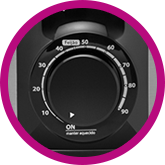

Programa especial para o preparo do feijão, prepare seu tipo de feijão preferido com apenas o giro de um botão.
Compacta e fácil de usar
-
Super segura
9 dispositivos de segurança para sua tranquilidade.
-
Super silenciosa
Sem barulhos na sua cozinha.
-
Super prática
Timer de 90 minutos
fácil de usar.
Prepare sua
receita preferida
com apenas um
giro de um botão.
Cabo elétrico
removível
Pode ser levada
à mesa.
Copo medidor e concha plástica
Protege o revestimento da panela.
Aço escovado
inoxidável de
fácil limpeza.
Múltiplos programas de cozimento
Além do preparo especial do feijão, prepare alimentos como peixes, legumes, arroz, batata, mandioca, aves, sopa, carne bovina, milho, feijão, músculo, costela e muito mais. Um cardápio completo para você receber ainda mais elogios pelos seus pratos.
| Alimento | Tempo total de cozimento |
|
|---|---|---|
| Peixe | 10 | |
| Legumes | 15 | |
| Arroz | 17 | |
| Batata, mandioca | 20 | |
| Aves | 20 | |
| Sopa | 20 | |
| Carne Bovina | 40 | |
| Milho | 45 | |
| Feijão | 45 | |
| Músculo | 60 | |
| Costela | 65 |
Panela removível
Com 3 litros de capacidade e revestimento antiaderente.
Conheça os 9 dispositivos de segurança
Assista ao vídeo do produto:

Timer de até 90 minutos
Avisa quando finaliza o preparo e mantém o alimento quentinho.
Embalagem
- 1 Panela de Pressão Elétrica Carioquinha;
- 1 Copo medidor;
- 1 Concha plástica;
- Livro de Receitas exclusivo Electrolux;
- Manual de instruções;
- Garantia do produto.
Especificações técnicas
- Altura: 250mm;
- Largura: 280mm;
- Profundidade: 282mm;
- Peso líquido 3,3kg.